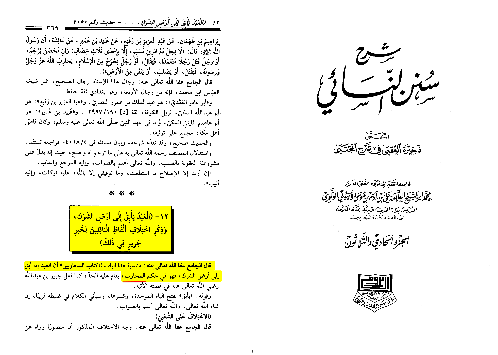
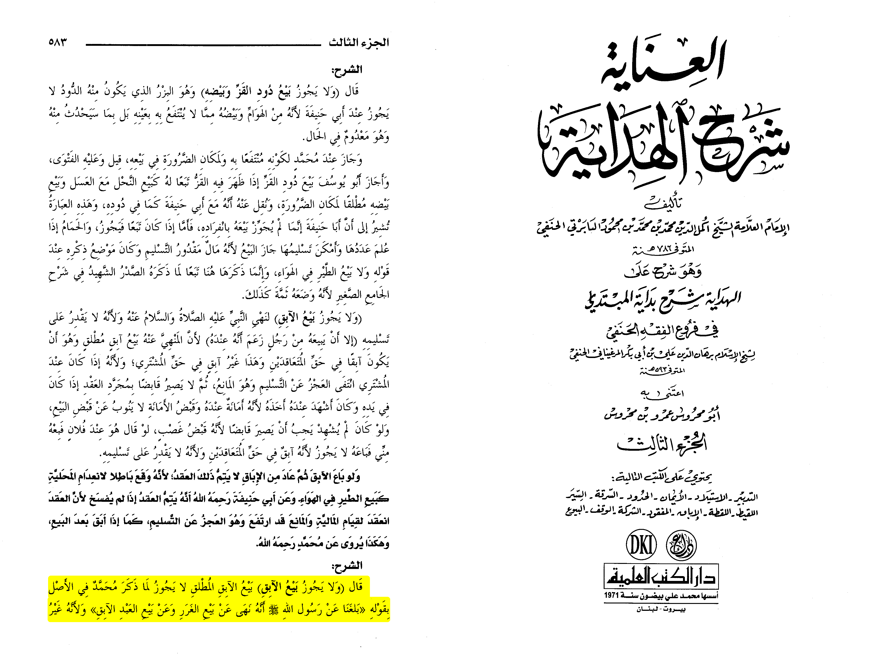

First of all this view of a slave who runs away we cut off his isn’t present in Islam it is impermissible since ours prophet forbade us from torturing people rather in Islam we have
a different view whoever (male fighter without women old people so on) runs away to the land of shirk (Darul harb) is to be killed we are going to investigate this today InshAllah and
remember if a jariyah (concubine) runs away it is impermissible kill her only male fighters.
First we need to have this in mind
The source of slaves is only captures of war (Sahih al-Bukhari 2227), The non Muslims such as old people people who didn’t participate in war like farmers aren’t to be enslaved.
The ruler isn’t obligated to enslaved (47:4) the non Muslims dhimis aren’t enslaved (Sahih al-Bukhari 3052)
So I already got you from war you came to fight me I gave you a chance by you being under me, and I will treat you with ease you choose to betray this and go back to the enemy now
it is permissible to kill you. Also the view of chained hardly people being beaten isn’t in Islam, yes we believe you can chain them as they’re captives of war except we don’t view
that you can chain them hardly or treat them harshly either for his saying (PBUH) : “ Your slaves are your brothers and Allah has put them under your command. So whoever has a brother
under his command should feed him of what he eats and dress him of what he wears. Do not ask them (slaves) to do things beyond their capacity (power) and if you do so, then help them.' "
(Sahih al-Bukhari 30)
First of all we should know when we refer to running away we only refer to the one who runs to the enemies land not muslim lands (mirqat al-mafatih 6/2195).
Second the one who goes to the enemies land is considered a fighter and this is known by anyone who uses his brain literally
In Sharh Sunan an-Nasa’i it states:
“If the slave runs away to the land of shirk (polytheism) he is under the ruling of a muharib (fighter)”
[Dhakhirat al-‘Uqba fi sharh al-mujtabah (31/369)]

As for buying him it is impermissible as stated by the prophet (pbuh)
Al-Babarty states:
“It isn’t permissible to sell a slave who ran way as it was reached to us that the messenger of Allah (SAW) prohibited selling a slave who ran away [1]”
[Al-‘Inayah sharh Al-Hidayah (3/583)]
[1]:
It was narrated that Abu Sa'eed Al-Khudri said:
“The Messenger of Allah (ﷺ) forbade selling what is in the wombs of cattle until they give birth, and selling what is in their udders unless it is measured out,
and selling a slave who has fled, and selling spoils of war until it has been distributed, and selling Sadaqah until it has been received, and what a diver is going to bring up."
(Sunan ibn majah 2196, Hassan).

In conclusion the ruling was made because of the breaking of the treaty running away to the enemy (only) is a waging of war.
Al-Hayyaj ibn ‘Imran reported: A servant boy of ‘Imran had ran away and he vowed to Allah that if he caught him,he would cut off his hand.
Then, he sent me to ask about that, so I came to Samurah ibn Jundab and I asked him. Samurah said,
“The Messenger of Allah, peace and blessings be upon him,
encouraged us to give in charity and he forbade us from mutilation.”
Then, I went to ‘Imran ibn Husayn and I asked him. ‘Imran said,
“The Messenger of Allah, peace and blessings be upon him,
encouraged us to give in charity and he forbade us from mutilation.”
Source: Sunan Abī Dāwūd 2667
Grade: Sahih (authentic) according to Al-Albani